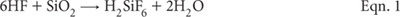
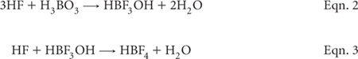
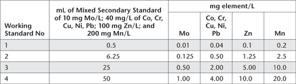
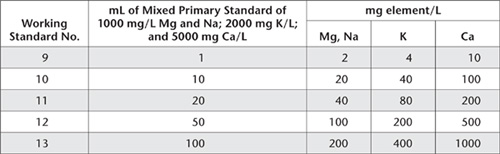

Information on the total concentration in soil of an element or a collection of elements has many applications. These include mass-balance studies, helping to ascertain pedological weathering processes, tracking the loading of contaminants, etc. Total elemental concentrations, however, are not guaranteed to reflect geological origin, except when little or no weathering has occurred (Thornton 1983). The deliberate addition of beneficial agricultural additives is also influential on the results. Table 17.1 provides examples of typical total soil concentrations of a range of elements. Methods for the total elemental analysis of C, N, P, and S are provided in Chapters 6, 7, 9, and 10, respectively. Alternative methods for total P and total S are included in this chapter.
Table 17.1. Tentative examples of worldwide ranges of total soÕ concentratŠns of elements, developed from Alloway (1990), Fergusson (1990), GÕes (1959), Oertel and GÕes (1959), Rayment and HamÕton (1997) and Thornton (1983). Mean values (in brackets) are from Thornton (1983).
Element |
SoÕ range |
Aluminium (% Al) |
1.0–30 (6.65) |
Arsenic (mg As/kg) |
0.1–194 (11.3) |
Cadmium (mg Cd/kg) |
<0.005–8.1 (0.62) |
Calcium (% Ca) |
0.01–32 (1.96) |
Chromium (mg Cr/kg) |
0.9–1500 (84) |
Cobalt (mg Co/kg) |
0.3–200 (12.0) |
Iron (% Fe) |
0.01–21 (3.2) |
Copper (mg Cu/kg) |
2–110 (25.8) |
Magnesium (% Mg) |
0.005–16 (0.83) |
Lead (mg Pb/kg) |
<1–890 (29.2) |
Manganese (mg Mn/kg) |
<1–18 300 (760) |
Molybdenum (mg Mo/kg) |
0.07–28 (1.92) |
Nickel (mg Ni/kg) |
0.1–1520 (33.7) |
Potassium (% K) |
0.005–7.9 (1.83) |
Silicon (% Si) |
28–41 (33) |
Sodium (% Na) |
0.005–10 (1.09) |
Strontium (mg Sr/kg) |
<3–3500 (278) |
Titanium (% Ti) |
<0.006–3.4 (0.051) |
Vanadium (mg V/kg) |
0.8–1000 (108) |
Zinc (mg Zn/kg) |
1.5–2000 (59.8) |
Decisions on the most appropriate method/s to use to quantify the total elemental concentration of soils are influenced by equipment and instrumentation available to the analyst. Choice of method is also influenced by whether or not elements that comprise the lattice of soil minerals need to be quantified, along with other forms of the same elements that exist on the surfaces of soil particles or within the soil matrix. For example, elements associated with recent anthropogenic soil contaminants and beneficial agricultural additives are likely to be easiest to extract. It follows that elemental analysis can yield true-totals or partial or pseudo-totals, depending on the choice of method. Highly influential are how the soils are digested and/or the choice of instrumentation (e.g. XRF, ICPAES, ICP-MS, GFAAS).
Specifically, two commonly used laboratory procedures for total elemental analysis of soils involve either XRF and acid digestions involving hydrofluoric acid (HF), followed by an appropriate analytical finish such as ICPAES, or ICP-MS for ultra-trace determinations (Radojevic and Baskin 1999; Baranowski et al. 2002). Only HF (with heating) will chemically decompose the silicate lattice of soils (see Eqn. 1 from Wu et al. 1996), with consequential release of companion elements. Other acid combinations without HF are less effective but are still useful for environmental applications involving contaminants from non-silicate sources (the great majority).

For Workplace Health and Safety reasons, the use of HF is not favoured when laboratory staff lack the necessary training and appropriate safety equipment. Extreme care must be taken if used, as HF is aggressive and highly toxic.
Aqua regia digestions involve a combination of concentrated nitric acid (HNO3) and hydrochloric acid (HCl), commonly in the v/v proportion of 1:3 (e.g. Andersen and Kisser 2004; Kisser 2005). Aqua regia is effective on most base metal sulfates, sulfides, oxides and carbonates but only ensures partial digestion for most rock-forming elements and elements of a refractory nature. According to Alloway (1995), aqua regia digests of soil will extract between 70% and 90% of the total content of the elements Cd, Co, Cr, Cu, Fe, Mn, Ni and Pb; 60–70% of Mg; 30–60% of Ca; 30–40% of Al, 10–20% of K; and as little as 2–5% Na. Generally these percentages are in agreement with those reported in Wageningen reports (WEPAL–ISE Soil Exchanges) on comparing medians of ‘so called totals’ vs ‘real totals’. The method of heating to promote digestion also slightly affects the results (Kisser 2005).
Of the laboratories reporting real totals for soils in Wageningen programs, ≈40% report the results of XRF concentrations in pressed powders, while about 10% report XRF concentrations in fused samples. The remaining 50% use acid digestions that include HF.
Contamination is an ever-present companion, particularly during soil grinding and subsequent laboratory procedures. Good laboratory hygiene and the use of equipment, apparatus and chemicals that do not measurably contaminate the sample is a sound defence. For example, commercial soil grinders can be sources of Cd, Cr, Fe, Ni, P and Zn contamination. Stainless steel can be a source of Cr Ni, Mo and Mn (Zief and Mitchell 1976), while tungsten carbide can release Fe (Whipple 1984) and other metals.
To avoid random scattering of fluorescent light or reflected light due to variable particulate sizes when using spectrometric techniques such as XRF, fine grinding of coarsely-ground soil samples (Buhrke 1998) provides an alternative to fusion. A particle size of <0.05 mm is commonly required, even though there is a risk of contamination. Fortunately, ring-mill or shatter-box grinders that use fused zirconia milling heads help to avoid metal contamination. Herein, a short (1–2 min) grind in a fused zirconia ring-mill is recommended prior to XRF analysis and for methods employing acid digestion, the latter to obtain a good representative sub-sample when weighing. Initially, the soil needs to be pulverised to provide a 10–30 g sub-sample for ring-mill grinding. A well maintained stainless steel mill is the best option for grinding soil to <2 mm.
Table 17.2. Summary detaÕs of method codes, method titles, technologies and notes for total elemental tests described in this chapter.
Code |
Technology |
Test method |
Notes |
17A1 |
X-ray fluorescence – dry powder pellets. |
True total elemental analysis of soils and sediments – X-ray fluorescence spectroscopy. |
High reliability but requires XRF instrumentation and expertise: excludes C, P, and S, described elsewhere. |
17A2 |
Microwave assisted digestion with HF (and with a H2O2 option) – ICPAES or GFAAS or ICP-MS analytical finish. |
Total elemental analysis of soils and sediments – microwave assisted digestion, with determination by atomic spectroscopy. |
High reliability but involves extremely hazardous chemicals and procedures. |
17B1 |
Reverse aqua regia block digestion – ICPAES or GFAAS or ICP-MS analytical finish. |
Pseudo-total elements of soils and sediments – reverse aqua regia block digestion, with determination by atomic spectroscopy. |
Pseudo-totals only but analytically safer than Method 17A2. Suits non-structural, non-silicate contaminants: excludes TOC and TSN. |
17B2 |
Reverse aqua regia microwave assisted digestion – ICPAES or GFAAS or ICP-MS analytical finish: approximates USEPA 3051A. |
Pseudo-total elements in soils and sediments – reverse aqua regia microwave assisted digestion of sludges, soils and sediments, with determination by atomic spectroscopy. |
|
17C1 |
Aqua regia block digestion – ICPAES or GFAAS or ICP-MS analytical finish. |
Pseudo-total elements of soils and sediments – conventional aqua regia block digestion. |
Pseudo-totals only but analytically safer than Method 17A2. Suits non-structural, non-silicate contaminants: excludes TOC and TSN. |
Methods used commonly on pre-dried mineral soils and sludges in Australasia for total elements and partial or pseudo totals are provided in this chapter. These cover XRF; microwave assisted digestion of an acid mixture, including HF; reverse aqua regia block digestion and atomic spectroscopy (ICPAES and GFAAS/ICP-MS); and microwave assisted centrifuge tube digestion of sludges, soils and sediments. Table 17.2 contains summary details.
Of the laboratories reporting real totals for soils in Wageningen inter-laboratory proficiency testing programs, about 40% report XRF concentrations in pressed powders, while about 10% report XRF concentrations in fused samples.
Using XRF spectroscopy, it is possible to quantify a wide range of elements in soil/sediment, including those listed in Table 17.3. The technology is dependent on expensive instrumentation, including an X-Ray tube that is a potential radiation hazard. Accordingly, the instrument must be operated with full attention to safety, while operators must wear and monitor a personal X-Ray monitor at all times.
A polychromatic beam of primary X-Rays is used to excite an XRF spectrum comprising fluorescent light, the wavelengths of which are characteristic of elements in the soil/sediment. Certified and secondary reference soils can be used to calibrate the XRF spectrometer.
This method, which extends Method 17A1 (total soil K) from Rayment and Higginson (1992), is based on the techniques described by Norrish and Hutton (1964), LaChance and Traill (1966) and Rousseau (1984). The calibration approach and analytical techniques are similar to those described earlier for total P and total S. Soils need to be dry, finely ground (<0.05 mm) and pelleted prior to measurement.
To minimise the likelihood of the dry-powder pellets cracking and exploding under vacuum (this is quite common for very sandy soils), boric acid (H3BO3) is routinely incorporated as a binding material prior to pelleting at high pressure. Examples of typical measurement-performance characteristics for Method 17A1 are shown in Table 17.3.
Table 17.3. Typical uncertainty, lower limits of reporting (LOR) and calibratŠn ranges for Method 17A1.
Analyte |
Uncertainty (%)# |
LOR |
Typical calibratŠn range |
Al |
5 |
0.5% |
0–10.0% |
As |
15 |
40 mg/kg |
0–500 mg/kg |
Ca |
5 |
0.01% |
0–4.0% |
Co |
8 |
10 mg/kg |
0–30 mg/kg |
Cr |
5 |
15 mg/kg |
0–350 mg/kg |
Cu |
8 |
10 mg/kg |
0–200 mg/kg |
Fe |
5 |
0.4% |
0–8.0% |
K |
5 |
0.025% |
0–2% |
Mg |
5 |
0.04% |
0–1.2% |
Mn |
5 |
28 mg/kg |
0–1600 mg/kg |
Ni |
5 |
10 mg/kg |
0–120 mg/kg |
Pb |
15 |
40 mg/kg |
0–750 mg/kg |
Si |
5 |
1.2% |
0–45% |
Sr |
10 |
15 mg/kg |
0–200 mg/kg |
Ti |
5 |
0.05% |
0–2.0% |
V |
5 |
10 mg/kg |
0–150 mg/kg |
Zn |
8 |
30 mg/kg |
0–1200 mg/kg |
#Uncertainty estimates are based on two times relative standard deviatŠns of replicated analysis of reference materials over time (D Lyons, pers. comm.).
Figure 17.1. A ring and pluck head used for soil grinding in a ‘shatterbox’.
Zirconia Ring and Puck Head and Compatible ‘Shatterbox’ Mill.
100 g capacity zirconia ring and puck head: see Figure 17.1.
X-ray Fluorescence Spectrometer
An XRF instrument capable of operating over the desired wavelength range as required for the analytical suite: see Figure 17.3.
70 Kilo-newton Press
A press capable of preparing pellets compressed to 70 kilo-newtons is used to press the soil samples into Al cups.
Silica Sand
This may be purchased then acid washed. Alternatively, prepare as described by Hewitt (1966).
Preparation of Pellets
Taking precautions (e.g. see Zief and Mitchell 1976) to avoid/eliminate contamination from the elements of interest, oven-dry (65°C) ≈20–30 g air-dry soil (<2 mm), then weigh 10.00 g of soil and 0.5 g of H3BO3 into the same numbered polystyrene or other suitable container and mix well. The H3BO3 is added to serve as a binder. Re-dry the mix in a forced-draught oven at 65°C for 12–24 h. Place each mix separately into a clean 100 g capacity ring and pluck head and grind in a ‘shatterbox’ for a minimum of 3–5 min, or until soil particle size is <0.05 mm. This is generally sufficient time to eliminate the effects of particle size and non-homogeneity (see Note 1).
Figure 17.2 A modern XRF instrument with an automatic sample changer loaded with dry-powder soil pellets.
Next pellet about 2–5 g soil/H3BO3 mix (<0.05 mm) into a 45 mm diameter Al disc, using a hydraulic press of ≈70 kilo-newtons total force. Refer to manufacturer’s instructions for suitability of Al disks (cups) for the XRF sample changer. Label each pellet on its underside with sample identification details. Load pressed samples into the sample changer of the XRF Spectrometer.
Analysis
Follow manufacturer’s recommendations when using the XRF Spectrometer. As an example, for an Applied Research Laboratory 9400 sequential XRF Spectrometer, use the following settings:
• Tube – 3.6 kW rhodium anode XRF tube.
• Power – 50 kV at 50 mA to provide a compromise between the excitation of heavy and light elements, providing adequate sensitivities for the determination of both.
• Detection – flow proportional counters are used for the determination of Ca, Co, Cr, Cu, Fe, K, Mg, Mn, Ni, Si, Ti, V and Zn; a scintillation counter is used for the determination of As, Pb and Sr.
• Crystals – select on the basis of best sensitivity.
• Counting times – peak 30 sec, background 10 sec.
Calibrate the XRF Spectrometer using a combination of secondary reference materials (e.g. Wageningen reference soils or similar), certified reference materials (if available), or artificial standards prepared in a similar way to those for total P (Method 9A1). If using secondary reference materials or certified reference materials, prepare pellets as per the samples; i.e. drying and ring-mill grinding with H3BO3 binder.
After appropriate background corrections have been performed, plot the corrected intensities against concentrations (certified or median) for each analyte of interest. Suitability of calibration and an estimate of LOR can be assessed from regression and goodness-of-fit parameters.
Run drift standards to assess calibration drift and determine the need to re-normalise the calibration. Monitor accuracy of secondary and in-house check soils by control charting results.
Report elemental concentrations (% or mg/kg of element) on an oven-dry basis, which can be assumed without further calculation, if samples were oven dried at 65°C.
1. Soil sample residues in the grinding head of the ‘shatterbox’ can be a serious source of contamination, especially when components become worn. For routine applications, these residues can be overcome between samples by scrubbing and washing with water then drying. Alternatively, the residues can be minimised by grinding a small quantity of acid-washed silica sand between each unknown sample.
This method is suitable for the total determination of elements listed in Table 17.3 and many others. Measurements of elements expected to be present at very low concentrations (e.g. Cd) are also possible, using an ICP-MS or a GFASS analytical finish.
Soil is digested with a 3:1 mixture (v/v) of concentrated nitric acid (HNO3) and hydrofluoric acid (HF) for 15 min using a suitable laboratory microwave system – e.g. SW-846 EPA Method 3052 (1995); US EPA Method 3052 (1996). Andersen and Kisser (2004) report that most European laboratories use microwave assisted digestion when working with solid matrices.
HF overcomes extraction problems in the soil digest associated with the insolubility of aluminosilicate minerals in the presence of most acids. Hydrochloric acid (HCl) is included to increase the stability of very high concentrations of Fe and Al. Also hydrogen peroxide (H2O2) can be added in small quantities (e.g. 2 mL) to assist the oxidation of OM, particularly when soils are known to be organically rich. Heating to 180 ± 5°C in reagent-resistant vessels such as teflon ‘bombs’ assists dissolution of solid matrices.
After cooling, make the digest to an appropriate volume before centrifugation (or equivalent) and analysis by ICPAES (or other suitable instrumentation), provided a HF-resistant torch is available, as is supplied by major instrument manufacturers. Alternatively, the diluted digest may be treated with H3BO3 to complex free F– in solution, and also to facilitate the dissolution of precipitated fluorides (Chen and Ma 2001; Wilson et al. 2006) according to Eqns. 2 and 3. The downside of adding H3BO3 is that it can create a matrix effect in subsequent analysis by ICPAES, sufficient to result in a 20% decrease in sensitivity for Mo, Ni, Pb, Sb, Se and Sn, and a 70% decrease in sensitivities for P and S (Chen and Ma 2001).

Another variant is to take the digest to dryness on a hot plate before re-dissolution using HNO3 or HCl (Lo and Sakamoto 2005).
Because all acids used, especially HF, are highly corrosive and toxic, organisations and operators must be aware of the extreme workplace health and safety issues involved. Analysts must have access to full, relevant Material Safety Data Sheets (MSDS), along with appropriate recovery measures in the event of an accident. Domestic microwave ovens and inappropriately sealed vessels without pressure relief must not be used for microwave digestions. That is, all apparatus and microwave equipment must be designed specifically for safe use in laboratories (Kingston and Jassie 1988; Kingston and Haswell 1997). Moreover, safety glasses, gloves and lab coats must be worn when handling acids, acid digests, standard solutions and other chemicals. All operations involving the transfer or dilution of acids should be carried out in a fume cupboard or in a lamina-flow hood. Pipetting of solutions by mouth must not occur.
Laboratory Microwave System and Digestion Equipment
Only laboratory-grade microwave equipment should be used for performance and safety reasons. The microwave’s temperature sensors should be accurate to ±2°C, including at the final temperature setting of 175–180°C. No specific calibration settings are provided for the microwave as these are influenced by the number and type of digestions vessels used at the time. The internal volume of each of these digestion vessels should be ≥50 mL. Each must be capable of withstanding pressures of at least 30 bar (435 psi), and capable of controlled pressure relief. Only fluorocarbon containers (such as PFA or TFM) are considered acceptable.
All digestion vessels and volumetric ware must be carefully acid washed and rinsed with deionised water (see Note 1 of Method 18D1 for guidance). Most manufacturers recommend that every third or fourth digest should be a reagent blank without soil, run mainly to clean residues from the inside of digestion vessels. When switching between high concentration samples and low concentration samples, it is recommended digestion vessels be cleaned by heating with 1+1 HCl for 2 h, followed by heating with 1+1 HNO3 for 2 h, before rinsing with deionised water and drying in a clean environment.
ICPAES
Calibrate and operate as per manufacturer’s instructions. A high resolution instrument, capable of automated operation, is preferred.
GFAAS
Calibrate and operate as per manufacturers instructions.
ICP-MS
Calibrate and operate as per manufacturers instructions.
Deionised Water
This water should be triple-deionised, with a minimum resistivity of 4.0 MΩ/cm.
68% Nitric Acid
As a minium use trace-metal grade HNO3 of 63.012 g/mol. Re-distilled HNO3 is preferred. Boiling temperature is 120.5°C at 1 atm.
Dilute 6.667 mL of nitric acid (HNO3, 15 mol/L; trace-metal grade) to 1.0 L with deionised water and store in a clean plastic container.
Hydrofluoric acid (redistilled or trace-metal grade)
Purchase commercially and handle with extreme care. The product should assay (acidmetric) at 39–43%, with a wt/mL (20°C) of ≈1.13 g. Because of its high reactivity toward glass, HF must be stored (only small quantities) in secure polyethylene or teflon containers.
4.5% Boric Acid Solution
Dissolve 45 g trace-metal grade H3BO3 in deionised water and make volume to 1.0 L.
Primary, Secondary and Working Standards
Prepare Primary and Secondary Standards as per Method 17B1. Also prepare standards for As, Na, Si and Sr (not described in Method 17B1) using commercially available standard solutions such as: 1000 mg/L of As and Sr; 5000 mg/L of Na and 10 000 mg/L of Si. Use Method 17B1 as a guide in the preparation of Working Standards, ensuring that samples and standards are matrix matched.
Weigh a dry, well-mixed, finely ground (particle size <0.05 mm) sample to the nearest 0.001 g into an appropriate digestion vessel, equipped with a pressure relief mechanism. For soils, ash, sediments, sludges, and siliceous wastes, initially use no more than 0.5 g. Add 9 ± 0.1 mL concentrated HNO3 and 3 ± 0.1 mL of high-grade or redistilled HF to the vessel in a fume hood. For very sandy soils, >3 mL of HF is recommended to a maximum of 5 mL (see Note 1).
If a vigorous reaction occurs upon the initial addition of reagents (as will occur if carbonates are present) or if the sample is suspected of containing easily oxidisable materials, allow the sample to predigest in the uncapped digestion vessel in the fume cupboard. Once the initial reaction has ceased, continue through the digestion procedure. Seal and place each digestion vessel in the microwave system according to manufacturer’s instructions. Connect monitors for temperature and pressure according to manufacturer’s specifications.
The temperature of each sample should rise to 180 ± 5°C in ≈5.5 min and remain at 180 ± 5°C for ≈9.5 min. The time taken to reach 180°C is not as critical as the heating time at 180°C. Accordingly, samples may be heated at a slower rate to reach 180°C (e.g. 10 min) to help overcome reactive substances in samples. At the end of the microwave program, allow the digestion vessels to cool for 5 min before removing them from the microwave system. When the digestion vessels have cooled to near room temperature, determine if the digestion vessels have maintained a complete seal throughout the digestion; consult the manufacturer’s recommendations on how best to do this. Repeat any digestions where the seal has been breached.
Carefully uncap and vent each digestion vessel in a fume hood, following the procedure recommended by the vessel manufacturer. When cool, follow one of three options, depending on the analytical finish and equipment available.
1. Transfer the sample to a PFA or TFM beaker (e.g. teflon) for evaporation of acid to dryness over a hot plate at about 110°C. After cooling add 0.10 M HNO3 (Lo and Sakamoto 2005). Make solution to volume (25, 40 or 50 mL) using a graduated PPE tube. Use this option only on compatible ICPAES or ICP-MS systems. Matrix match relevant Working Standards with the samples and record the final digest volume, usually 25 mL.
2. Transfer particulate-free digests to graduated PFA or TFM tubes. Make to volume (25, 40 or 50 mL) using deionised water. Use this option only on compatible ICPAES or ICP-MS systems that have HF-resistant components. Matrix-match relevant Working Standards with the samples and record the final digest volume, usually 25 mL.
3. Transfer the sample to a PFA or TFM beaker. Add 20 mL of 4.5% H3BO3 to complex fluoride (Wilson et al. 2006). Subsequently dilute accurately to volume (100–200 mL) using appropriate plastic ware. Matrix-match standards to samples in terms of HNO3 and H3BO3 acid strengths.
Calibrate the relevant instrument (ICPAES, ICP-MS or GFAAS) using freshly prepared and matrix matched Working Standards. After appropriate background corrections have been performed, plot the corrected intensities against concentrations (certified or median) for each analyte of interest. For a sample weight of 0.5 g and a final digest volume of 25 mL, multiply the ICPAES result in mg/L by 50.
Suitability of the calibration and an estimate of LOR can be assessed from regression and goodness-of-fit parameters. Monitor accuracy of secondary and in-house check soils by control charting the results.
Report elemental concentrations (% or mg/kg of element) on an oven dried basis. If the samples were not oven-dry on commencement of digestion, use the air-dry moisture to oven-dry moisture ratio to convert to an oven-dry concentration. Refer to Method 2A1 for guidance with regard to this soil moisture calculation.
1. Toxic fumes are produced during digestion. Therefore, all steps involving the additions of reagents to open vessels and the opening of microwave digestion vessels must be performed in a properly operating fume cupboard. The analyst should wear protective gloves and face protection and must not at any time permit a solution containing HF to come in contact with skin, lungs or glass.
While aqua regia digestion will rarely recover 100% of all elements in soils and related solid matrices, particularly when these are bound to silicates, such digestions still have many useful applications. One is for monitoring anthropogenic contaminant levels in solid matrices. Conventional aqua regia digests use a mixture of one part of concentrated nitric acid (HNO3) to three parts of concentrated hydrochloric acid (HCl) (e.g. Andersen and Kisser 2004; Kisser 2005). The critical reaction between the two acids is shown as Eqn. 4.
Reverse aqua regia is a 3:1 mix of concentrated HNO3 to concentrated HCl. Many researchers prefer reverse aqua regia because the high relative concentration of HNO3 is efficient in decomposing sulfides, while total acidity is sufficiently strong to solubilise easily reactive metallic elements. These include those of Cu and Hg, which can enter soils in biosolids and other wastes. The inclusion of hydrogen peroxide (H2O2) is sometimes used as a final step in the digestion process to complete the decomposition of Hg in the sample matrix (Lomonte et al. 2008). Reverse aqua regia also lessens interference during subsequent instrumental analysis from high Cl– concentrations (Andersen and Kisser 2004) from the HCl component, although the interference is not eliminated, especially for analysis by ICP-MS.
In this reverse aqua regia method, the digestate from a temperature-controlled digestion block is diluted to volume, and centrifuged. Subsequent analysis by ICPAES is preferred for elements such as Al, Ca, Co, Cr, Cu, Fe, K, Mg, Mn, Mo, Na, Ni, P, Pb, S and Zn. Cadmium at ultra-trace to trace concentrations is best determined by GFAAS or ICP-MS. Examples of typical measurement-performance when analysed at specified wave lengths by ICPAES are shown in Table 17.4.
Safety glasses, gloves and lab coats must be worn when handling acids, acid digests, standard solutions and other chemicals. Moreover, all operations involving the transfer or dilution of acids should be carried out in a fume cupboard or in a lamina-flow hood. Pipetting of solutions by mouth must not occur.
Digestion block
Use a digestion block with a programmable controller and heat shield that in combination provide even, consistent heating to digestion tubes according to the following sequence:
1. Step to 75°C, hold and heat for 30 min.
Table 17.4. Examples of ICPAES analytical wavelengths and expected performance characteristics of Method 17B1.
Analyte |
Wavelength (nm) |
Uncertainty (%)# |
LOR |
Al |
394.4 |
10–15 |
0.003% |
Ca |
430.25 |
8–10 |
0.003% |
Cd |
228.8 (GFAAS) |
25 |
0.02 mg/kg |
Co |
231.16 |
15 |
1.0 mg/kg |
Cr |
267.7 |
15 |
6.0 mg/kg |
Cu |
219.96 |
6–8 |
5.0 mg/kg |
Fe |
240.5 |
15 |
0.007% |
K |
766.5 |
10–15 |
0.04% |
Mg |
383.8 |
8–10 |
0.001% |
Mn |
257.6 |
10–15 |
1.0 mg/kg |
Mo |
202.0 |
10–15 |
3.0 mg/kg |
Ni |
227.9 |
15 |
5.0 mg/kg |
P |
177.4 |
10 |
0.001% |
Pb |
220.3 |
15 |
5.0 mg/kg |
S |
181.97 |
15 |
0.001% |
Zn |
213.86 |
15 |
6.0 mg/kg |
# Uncertainty estimates are based on two times relative standard deviatŠns of replicated analysis of reference materials over time (D Lyons, pers. comm.).
2. Step to 100°C, hold and heat for 30 min.
3. Step to 110°C, hold and heat for 60 min.
4. Step to 140°C, hold and heat for 400 min.
ICPAES
Calibrate and operate as per manufacturer’s instructions. A high-resolution instrument, capable of automated operation, is preferred.
GFAAS
Calibrate and operate as per manufacturer’s instructions.
ICP-MS
Calibrate and operate as per manufacturer’s instructions.
Miscellaneous Equipment
(a) 50 mL graduated Greiner or Falcon centrifuge tubes – polyethylene/polypropylene, screw cap
(b) Polyethylene centrifuge tubes – 10 mL capacity
(c) Pipettes, variable volume
(d) Digestion tubes – borosilicate glass, 300 mm × 25 mm, calibrated usually to 25.0 mL
Deionised Water
This water should be triple-deionised, with a minimum resistivity of 4.0 MΩ/cm.
Hydrochloric Acid [HCl; 10 mol/L (ρ20° 1.16 g/mL)]
Nitric Acid [HNO3; 15 mol/L (ρ20° 1.4 g/mL)]
0.1% (v/v) Nitric Acid
Dilute 1.0 mL nitric acid (HNO3, 15 mol/L; trace-metal grade) with deionised water and make volume to 1.0 L.
10 μg/L Mix v Tuning Solution (for ICP-MS analysis)
Prepare as for Method 18D1.
70 μg/L In, Re and Sc Internal Standard (for ICP-MS analysis)
Prepare as for Method 18D1.
Elemental Primary Standards
Commercially prepared standard solutions
Preferably obtain commercially prepared, high quality, standard solutions (typically 1000 mg element/L – with certificates of analysis) for use as individual Primary Standards for elements including Cd, Co, Cr, Cu, Mo, Ni, Pb, Mn and Zn. Commercially prepared standard solutions may also be used for Fe, Ca, K, Mg, Na, P and S, if they can match the applicable concentrations outlined later.
Obtain, freshly dry (separately, as specified elsewhere in this volume), and cool in a desiccator the following trace-metal grade chemicals: aluminium potassium sulfate, AlK(SO4).12H2O; ferrous ammonium sulfate, (NH4)2 SO4.FeSO4.6H2O; calcium carbonate, CaCO3; potassium nitrate, KNO3; magnesium oxide, MgO; sodium chloride, NaCl; potassium dihydrogen orthophosphate, KH2PO4; ammonium sulfate, (NH4)2SO4. Include other elements as necessary. Next prepare individual Primary Standard solutions (with a shelf life up to two years), guided by the following:
5000 mg Al/L
Transfer 43.958 g of AlK(SO4)212H2O into a 500 mL volumetric flask. Dissolve in deionised water and add 25 mL of HNO3. Mix thoroughly and dilute to volume with deionised water.
10 000 mg Fe/L
Transfer 35.108 g of (NH4)2 SO4.Fe SO4.6H2O into a 500 mL volumetric flask. Dissolve in deionised water and add 25 mL of HNO3. Mix thoroughly and dilute to volume with deionised water.
Mixed 5000 mg Ca/L, 1000 mg Mg/L, 2000 mg K/L, 1000 mg Na/L
Weigh 1.658 g MgO and 12.486 g CaCO3 and wash into a 1.0 L conical flask with about 50 mL each of deionised water. Add 40 mL of HNO3 and heat until all CO2 is expelled. Cover and allow to cool, then transfer quantitatively to a 1.0 L volumetric flask with CO2-free (boiled) deionised water and mix well. To this mixture add quantitatively a solution of deionised water containing 2.542 g dry wt of NaCl and a separate solution of deionised water containing 5.172 g dry wt of KNO3. Mix well and make to 1.0 L with deionised water. Transfer the mixed standard to a clean plastic bottle. Should MgO not assay at 100% purity, adjust the weight according to the assay obtained.
Mixed 2500 mg P/L, 1,000 mg S/L
To a 1.0 L volumetric flask add ≈500 mL of deionised water, 40 mL of HNO3, 10.985 g dry wt of KH2PO4 and 4.122 g dry wt of (NH4)2SO4. Stopper the flask, and then swirl the contents vigorously until the solids are completely dissolved. Dilute to volume with deionised water.
Mixed Elemental Secondary or Intermediate Standard (A).
10 mg Mo/L; 40 mg/L of Co, Cr, Cu, Ni, Pb; 100 mg Zn/L; 200 mg Mn/L
Accurately transfer by pipette to a single 500 mL volumetric flask containing 25 mL of HNO3 (and at least an equal volume of deionised water) volumes of Elemental Primary Standards (1000 mg element/L) as follows:
• 5.0 mL of Mo;
• 20 mL each of Co, Cr, Cu, Ni and Pb;
• 50 mL of Zn, and
• 100 mL of Mn.
Intermediate Cd Standard (B) – 10 mg Cd/L
Transfer by pipette 10.0 mL of Cd Primary Standard of 1000 mg Cd/L to a 1.0 L volumetric flask. Add 50 mL of HNO3 and dilute to volume with deionised water. This solution may be stored for up to 6 months.
Dilute Cd Standard (C) – 50 μg Cd/L
Transfer by pipette 5.0 mL of Intermediate Cd Standard (B) (10 mg Cd/L) to a 1.0 L volumetric flask. Add 20 mL of HNO3 and dilute to volume with deionised water. This solution may be stored for up to 2 months.
Reverse Aqua Regia Working Standards
Transfer (by pipette or 10 mL micro-burette or, for volumes >10 mL, a 50 mL burette) the required volumes of individual Elemental Primary Standards and/or Secondary/Intermediate Standards to 500 mL volumetric flasks (for Tables 17.5–17.8). To each 500 mL volumetric flask, add 5.0 mL of 10 M HCl, 15 mL of 15 M HNO3, and dilute to volume with deionised water. Prepare a calibration blank by matrix matching the acid background without the addition of any standard. The Working Standards outlined in Table 17.5 to Table 17.9 are best if freshly prepared on the day of use, but may be stored in inert containers for up to one month. Note that final volume for Cd Working Standards (Table 17.9) is 100 mL.
Dry sub-samples of air-dry (≈40°C) soil/sediment in a clean, forced draft laboratory oven. The air supply to the oven should be filtered to at least Class 1000 standard if ultra-trace to trace concentrations of one or more elements are being targeted. Cool then mill to <0.05 mm in a Zirconia (strongly recommended) ring and puck head and compatible ‘shatterbox’ for a time sufficient to achieve the specified soil particle size; typically 1–2 min. Take account of Note 1 of Method 17A1.
Weigh 0.5 g of sample (to the nearest 0.001 g) of <0.05 mm particle size into a pre-cleaned borosilicate glass digestion tube (300 mm × 25 mm with a restricted neck, calibrated to 25.0 mL). Include a duplicate sample, at least two reference soils (at least one secondary or certified reference soil) and two reagent blanks in a typical digestion run of 50 tubes.
Add 3.75 mL of HNO3 and 1.25 mL of HCl to each digestion tube (see Note 2), swirl, then place these on the digestion block located within an operating fume cupboard. Stand overnight with the fume cupboard running. Next morning, gently re-swirl each digestion tube to ensure no soil has attached to the bottom or sides of the digestion tube.
Table 17.5. Volumes of Secondary/Intermediate Standard (A) for the preparatŠn of 500 mL of Mixed Reverse Aqua Regia Working Standards for Mo, Co, Cr, Cu, Ni, Pb, Zn and Mn and the concentratŠns of those Working Standards.

Table 17.6. Volumes of relevant Elemental Primary Standards for the preparatŠn of 500 mL of Mixed Reverse Aqua Regia Working Standards for Al and Fe and the concentratŠns of those Working Standards.
Working Standard No. |
mL of 5000 mg Al/L standard |
mg Al/L |
5 |
10 |
100 |
6 |
150 |
1500 |
7 |
5 |
100 |
8 |
50 |
1000 |
Table 17.7. Volumes of relevant Primary Standards for the preparatŠn of 500 mL of Mixed Reverse Aqua Regia Working Standards for Ca, Mg, Na and K and the concentratŠns of those Working Standards.

Table 17.8. Volumes of relevant Primary Standards for the preparatŠn of 500 mL of Mixed Reverse Aqua Regia Working Standards for P and S and the concentratŠns of those Working Standards.
Working Standard No. |
mL of each relevant Elemental Primary Standard of 2500 mg P/L and 1000 mg S/L |
mg/L |
|
P |
S |
||
14 |
1 |
5 |
2 |
15 |
10 |
50 |
20 |
16 |
20 |
100 |
40 |
17 |
50 |
250 |
100 |
18 |
100 |
500 |
200 |
Table 17.9. Volumes of Cd Standard (C) of 50 μg Cd/L [dispense using a 10 mL burette (or variable volume pipette) into a 100 mL volumetric flask to which has been added 1.0 mL of 10 M HCl and 3 mL of 15 M HNO3)] for the preparatŠn of Reverse Aqua Regia Working Standards for Cd, and the concentratŠns of those Working Standards. Make to volume with deŠnised water.
Working Standard No. |
mL of 50 μg Cd/L Standard (C) |
μg Cd/L |
19 |
2 |
1 |
20 |
6 |
3 |
Set up the programmable controller of the digestion block and commence digestion, checking at least every 15–20 min to ensure digestions are proceeding normally. If necessary, remove any digestion tubes from the digestion block where the sample has bubbled up the tube and out of contact with the acids. In those cases, return the separated sample to the sample/acid mix by washing the internal surface with some 0.1% HNO3. Return these digestion tubes to their position on the digestion block and watch for more bubbling. If by the time the temperature is up to 100–140°C and some of the soil is still stuck on the side of the tube, rinse the soils down with a further small volume of 0.1% HNO3.
Let the digest boil down until there is just under 1 mL of liquid left or the soil/acid mixture has the consistency of a thick sludge. Remove tubes from the block and allow to cool to room temperature. If any digest tube boils dry, remove from the block and add 1 mL of Reverse Aqua Regia Mixture (0.75 mL HNO3 + 0.25 mL HCl). Heat on block for a further 10 min or so then remove.
Make up accurately to 25 mL with 0.1% HNO3. Mix well (with a vortex stirrer if available), then transfer each digest solution to a 50 mL centrifuge tube and cap. Centrifuge for 15 min at 1500 rpm.
Decant about 10 mL of each clarified digest solution into 10 mL polyethylene centrifuge tubes or as suited to the auto-sampler of the ICPAES. Set up and operate the ICPAES according to manufacturer’s instructions. Check calibration drift on a regular basis and recalibrate/normalise if necessary. If an unknown analyte concentration exceeds that of the highest working standard, dilute the sample digest with calibration blank and repeat the determination and record the dilution ratio.
If necessary, set up a GFAAS or ICP-MS according to the manufacturer’s instructions for the determination of Cd.
In the case of ICP-MS, dilute 2 mL of each clarified soil digest solution with at least 8 mL of 0.1% HNO3, to reduce total soluble salts to an acceptable level. (Make allowance for this dilution when calculating results.) Also check for instrument response/performance, using the 10 μg/L Mix v Tuning Solution. All instrument performance criteria should be confirmed at this point. Mix the 70 μg/L In Re and Sc Internal Standard with each standard and diluted sample extract in the proportion 0.42 mL/min of Internal Standard to 0.6 mL/min of diluted digest solution during operation of the ICP-MS. (This is used to compensate for drift.) Also, check a reference solution every 10 samples and recalibrate if drift exceeds 10%. If analyte concentration exceeds the standard calibration range, dilute the clarified soil extracts with calibration blank and repeat relevant determinations. See Note 4 of Method 18D1 for guidelines on key ICP-MS settings.
To calculate mg/kg of analyte in soil, multiply the instrumental result in mg/L by 50 (assumes 0.5 g sample to 25 mL final volume). To report concentrations in % as is often required for Al, Ca, Fe, Mg, P and S, divide mg/kg by 104. Also account for any subsequent dilutions of sample digests.
Report elemental concentrations (% or mg/kg of element) on an oven dried basis. Use the air-dry moisture to oven-dry moisture ratio to convert to an oven-dry concentration. Refer to Method 2A1 for guidance with regard to this soil moisture calculation.
1. All chemicals should be at least analytical grade, while for precise measurements at ultra-trace to trace concentrations, trace-metal grades are preferred. Ultra pure acids can be prepared from analytical reagent grade acids by sub-boiling point distillation.
2. Add the mixed acids slowly to calcareous soils as these will almost invariably froth up inside the digestion tube.
This method follows US EPA Method 3051A (2007), which is a modification of US EPA Method 3050B (1996). It uses a microwave assisted reverse aqua regia digest. Samples and acids are placed in a microwave vessel (PVA or TFM) and the vessel sealed and heated for a specified time. The digest used in this procedure is intended to provide a rapid multi-element acid extraction or dissolution prior to analytical determinations, which can be made using ICPAES, ICP-MS, or GFAAS.
The method is suitable for determinations of Al, As, B, Cd, Ca, Cr, Co, Cu, Fe, K, Mg, Mn, Mo, Na, Ni, P, Pb, S and Zn, with all of these (except Cd) suited to instrumental analysis by ICPAES. Cd at trace concentrations and lower is best determined by ICP-MS or GFAAS. Other analytes, including Sb, Ba, Be, Hg, Se and Ag, are not described, but are possible using the digestion described, along with analytical ‘finishes’ such as hydride generation, cold vapour generation, GFAAS, etc.
The method is similar to Method 17B1, except it uses microwave digestion rather than a block digester. Also, the final soil/digest-solution ratio is 1:100, rather than 1:50 as in Method 17B1. When the same analytical wavelengths defined in Method 17B1 (Table 17.4) are used, however, similar estimates of LORs and uncertainty of determinations can be expected for elements covered by this method. For As and B, the wavelengths 189.0 nm and 249.7 nm are suggested and LORs of 5.0 mg As/kg and 5.0 mg B/kg should be achievable.
As for Method 17A2 and Method 17B1, all apparatus and equipment must be designed specifically for safe use in laboratories. Moreover, safety glasses, gloves and lab coats must be worn when handling acids, acid digests, standard solutions and other chemicals. All operations involving the transfer or dilution of acids should be carried out in a fume cupboard or in a lamina-flow hood. Pipetting of solutions by mouth must not occur.
Laboratory Microwave System and Digestion Equipment
As for Method 17A2. Also refer to Kingston and Jassie (1988) and Kingston and Haswell (1997) for more details. In addition, all digestion vessels and volumetric ware must be carefully acid washed and rinsed with deionised water (see Note 1 of Method 18D1 for guidance). Most manufacturers recommend that every third or fourth digest should be a reagent blank, mainly to clean residues from the inside of digestion vessels. When switching between high concentration samples and low concentration samples, it is recommended digestion vessels be cleaned by heating with 1+1 HCl for 2 h, followed by heating with 1+1 HNO3 for 2 h, before rinsing with deionised water and drying in a clean environment.
As for Method 17B1.
Primary and Intermediate Standards for Most Analytes
As for Method 17B1.
Primary Standards for Arsenic and Boron
1000 mg/L of As and B, respectively.
Use commercially available standard solutions, supported by certificates of analysis.
Intermediate Standard for As and B
40 mg/L of As and B, respectively.
Transfer by pipette 40.0 mL of As Primary Standard and B Primary Standard to separate 1.0 L volumetric flasks. To each add 50 mL of HNO3 and dilute to volume with deionised water. This solution may be stored for up to 6 months in clean, inert reagent bottles.
Working Standards for Most Analytes
As for Method 17B1, except to volumetric flasks add the equivalent of 90 mL of HNO3 and 30 mL of HCl to 500 mL with deionised water. All acids should be ultra-pure or sub-boiling distilled.
Working Standards for As and B
Prepare these in the same way and over the same range as for Working Standards for Co, Cr, Cu, Ni and Pb described in Method 17B1, including Table 17.5. The 500 mL volumetric flasks should contain the equivalent of 90 mL of HNO3 and 30 mL of HCl. Mix and make to volume with deionised water.
Calibration Blank
Prepare from the same reagents and deionised water, equivalent to 90 mL of HNO3 and 30 mL of HCl to 500 mL. Mix well and store in a clean, inert reagent bottle.
Prepare dry sub-samples of air-dry (≈40°C) of soil/sediment and mill to <0.05 mm in a Zirconia (strongly recommended to avoid trace metal contamination) ring and puck head and compatible ‘shatterbox’, as described in Method 17B1.
Weigh 0.50 ± 0.01 g of a well-mixed sample of <0.05 mm particle size into an appropriate microwave vessel equipped with controlled pressure relief mechanism. Add 9 ± 0.1 mL of HNO3 and 3 ± 0.1 mL of HCl to the vessel in a fume hood. If a vigorous reaction occurs upon the initial addition of reagents (as will occur if carbonates are present) or the sample is suspected of containing easily oxidizable materials, allow the sample to predigest in the uncapped digestion vessel. The analyst should wear a laboratory coat, protective gloves and face protection.
The temperature of each sample should rise to 175 ± 5°C in approximately 5.5 min and then remain at that temperature for a further 4.5 min. Due to the rapid advances in microwave technology, follow the manufacturer’s recommended instructions on their microwave digestion system, including the number of vessels that can be run at the required temperature of digestion. When fewer than the recommended samples are to be digested, the remaining vessels should be filled with the same blank acid mixture to ensure a ‘normal’ energy balance in the microwave.
Allow the vessels to cool for 5 min before removing them from the microwave. Double-check that the microwave vessels have maintained a seal throughout the digestion; consult the manufacturer’s recommendations on how best to do this. Repeat any digestions where the seal has been breached.
Subsequently, vent all microwave vessels in a fume hood before uncapping, thus avoiding a rush of acid vapours. Quantitatively transfer the sample to an acid-washed 50 mL graduated centrifuge tube and dilute accurately to 50 mL with deionised water. Centrifuge for 15 min at 1500 rpm. Decant about 10 mL of each clarified digest solution into 10 mL polyethylene centrifuge tubes or as suited to the auto-sampler of the ICPAES.
Set up and operate the ICPAES according to manufacturer’s instructions. Check calibration drift on a regular basis and recalibrate/normalise if necessary. If an unknown analyte concentration exceeds that of the highest working standard, dilute the sample digest with Calibration Blank and repeat the determination and record the dilution ratio.
Alternatively, set up a GFAAS or ICP-MS according to the manufacturer’s instructions for the determination of Cd.
In the case of ICP-MS, dilute 2 mL of each clarified soil digest solution with at least 8 mL of 0.1% HNO3, to reduce total soluble salts to an acceptable level. (Make allowance for this dilution when calculating results.) Also check for instrument response/performance, using the 10 μg/L Mix v Tuning Solution. All instrument performance criteria should be confirmed at this point. Mix the 70 μg/L In Re and Sc Internal Standard with each standard and diluted sample extract in the proportion 0.42 mL/min of Internal Standard to 0.6 mL/min of diluted digest solution during operation of the ICP-MS. (This is used to compensate for drift.) Also, check a reference solution every 10 samples and recalibrate if drift exceeds 10%. If analyte concentration exceeds the standard calibration range, dilute the clarified soil extracts with calibration blank and repeat relevant determinations. See Note 4 of Method 18D1 for guidelines on key ICP-MS settings.
To calculate mg/kg of analyte in soil, multiply the instrumental result in mg/L by 100 (assumes 0.5 g sample to 50 mL final volume). To report concentrations in % as is often required for Al, Ca, Fe, Mg, P and S, divide mg/kg by 104. Also account for any subsequent dilutions of sample digests.
Report elemental concentrations (% or mg/kg of element) on an oven-dry basis. Use the air-dry moisture to oven-dry moisture ratio to convert to an oven-dry concentration. Refer to Method 2A1 for guidance with regard to this soil moisture calculation.
1. For each batch of 36 or fewer samples, include an analytical reagent blank. This should pass throughout the entire sample preparation and analytical process to assess any contamination during sample digestion and analysis. In addition, at least one spiked sample should be processed with each analytical batch of 36 or fewer samples. These ‘spikes’ should be added to the digestion vessel immediately after the addition of acids.
In this method, air-dry soil is digested with aqua regia in the ratio of 1:3 HNO3 to HCl. This method broadly follows Standards Australia method AS 4479 in terms of the extraction and determination of metals. For specific details, readers are directed to AS 4479.2 (1997) for the aqua regia digest and to AS 4479.4 (1997) for the determination of metals by ICPAES. The high concentration of Cl– in aqua regia digests can preclude the determination of metals by ICP-MS, unless diluted significantly. Ultra-trace metals in digests may be determined by GFAAS.
Elements commonly analysed in aqua regia digest solutions by ICPAES include Al, Cd (only elevated concentrations), Co, Cr, Cu, Fe, Mn, Ni, Pb and Zn. When the same wavelengths defined in Method 17B1 (Table 17.4) are used, similar estimates of LORs and uncertainty of determinations can be expected for elements analysed by this method.
As for Method 17B1
Refer to 17B1 for details of the reagents and standards for each specific analyte. Prepare working standards as in 17B1, except add 37.5 mL of HCl and 12.5 mL of HNO3 to each 500 mL volumetric flask.
Aqua Regia Solution
To 3 volumes of HCl slowly add 1 volume of HNO3 with stirring.
As for Method 17B1 except use 3.75 mL of HCl and 1.25 mL of HNO3 in the digest and use Aqua Regia Solution when required instead of reverse aqua regia solution. Make to volume with 0.1% HNO3 to matrix-match with standards, mix and centrifuge as in 17B1.
Operate the ICPAES as per manufacturer’s instructions. Alternatively set up and operate GFAAS or ICP-MS according to the manufacturer’s instructions, particularly for the determination of low Cd concentrations. This includes diluting 2 mL of each clarified soil digest solution with at least 8 mL of 0.1% HNO3, to reduce total soluble salts to an acceptable level, prior to analysis by ICP-MS. Details of this and any other dilutions should be recorded and accounted for in subsequent calculations.
To calculate mg/kg of analyte in soil, multiply the instrumental result in mg/L by 50 (assumes 0.5 g sample to 25 mL final volume). To report concentrations in % as is often required for Al, Ca, Fe, Mg, P and S, divide mg/kg by 104. Also account for any subsequent dilutions of sample digests.
Report elemental concentrations (% or mg/kg of element) on an oven-dry basis: see Note 1. Use the air-dry moisture to oven-dry moisture ratio to convert to an oven-dry concentration. Refer to Method 2A1 for guidance with regard to this soil moisture calculation.
1. While reporting of results on an oven-dry basis is preferred, there can be occasions when reporting on an air-dry basis is sufficient. If this option is taken, no adjustment for traces or residual moisture is required. A clear statement on the moisture status should appear on the test report.
Alloway BJ (Ed) (1990) Heavy Metals in Soils. Blackie and John Wiley & Sons, Inc., New York.
Alloway BJ (1995) Methods of analysis for heavy metals in soil. In Heavy Metals in Soils. pp. 58–101. Blackie Academic and Professional, New York.
Andersen KJ and Kisser MI (2004) Digestion of solid matrices. Desk Study – Horizontal. www.ecn.nl/docs/society/horizontal/hor18_digestion.pdf. Horizontal – 6.
AS 4479.2 (1997) Analysis of soils Part 2: Extraction of heavy metals and metalloids from soil by aqua regia – hotplate digestion method. Standards Australia, Sydney.
AS 4479.4 (1997) Analysis of soils Part 4: Determination of metals in aqua regia extracts of soil by inductively coupled plasma – atomic emission spectrometry. Standards Australia, Sydney.
Baranowski R, Rybak A and Baranowska I (2002) Speciation analysis of elements in soil samples by XRF. Polish Journal of Environmental Studies 11, 473–482.
Buhrke VE 1998 Preface, Specimen preparation. The Rigaku Journal 16, 3–5.
Chen M and Ma LQ (2001) Comparison of three aqua regia digestion methods for twenty Florida soils. Soil Science Society of America Journal 65, 491–499.
Fergusson JE (1990) The Heavy Elements: Chemistry, Environmental Impact and Health Effects. Pergamon Press, Sydney.
Giles JB (1959) Trace element content of some Queensland surface soils. Commonwealth Scientific Research Organisation, Division of Soils Divisional Report 1/59. Commonwealth of Australia, Adelaide.
Hewitt EJ (1966) Sand and Water Culture Methods Used in the Study of Plant Nutrition. Technical Communication No. 22, 2nd Edn. Commonwealth Agricultural Bureaux, England.
Kingston HM and Haswell S (Eds) (1997) Microwave–Enhanced Chemistry. Fundamentals, Sample Preparation, and Applications. American Chemical Society, Washington, D.C.
Kingston HM and Jassie LB (Ed) (1988) Introduction to Microwave Sample Preparation: Theory and Practice. ACS Professional Reference Book Series; American Chemical Society: Washington, DC.
Kingston HM and Walter PJ (1992) Comparison of microwave versus conventional dissolution for environmental applications. Spectroscopy 7, 20–27.
Kisser MI (2005) Digestion of solid matrices. Part 1: Digestion with Aqua Regia. Report of evaluation study. www.ecn.nl/docs/society/horizontal/Digestion_report_Aqua_regia.pdf. Horizontal – 18.
LaChance GR and Traill RJ (1966) A practical solution to the matrix problem in X-ray analysis. Canadian Journal of Spectroscopy 11, 43–48.
Lo JM and Sakamoto H (2005) Comparison of the acid combinations in microwave-assisted digestion of marine sediments for heavy metal analyses. Analytical Sciences 21, 1181–1184.
Lomonte C, Gregory D, Baker AJM and Kolev SD (2008) Comparative study of hot plate wet digestion methods for the determination of mercury in biosolids. Chemosphere 72, 1420–1424.
Norrish K and Hutton JT (1964) Preparation of samples for analysis by X-ray fluorescence spectrography. 2. Powder sample. CSIRO Australia, Division of Soils Divisional Report No. 3/64.
Oertel AC and Giles JB (1959) Trace element profiles of some Queensland soils. Commonwealth Scientific Research Organisation, Division of Soils Divisional Report 8/58. Commonwealth of Australia, Adelaide.
Radojevic M and Baskin V (1999) Practical Environmental Analysis. The Royal Society of Chemistry, Paston Prepress Ltd. UK.
Rayment GE and Hamilton, DJ (1997) Chemical contamination of soil, water and produce. In Sustainable Crop Production in the Sub-tropics. (Eds AL Clark and PB Wylie) pp. 150–169. Queensland Department of Primary Industries Information Series QI97035.
Rayment GE and Higginson FR (1992) Australian Laboratory Handbook of Soil and Water Chemical Methods. Inkata Press, Port Melbourne.
Rousseau RM (1984) Fundamental algorithm between concentration and intensity in XRF analysis: 1–Theory, 2–Practical application. X-Ray Spectrometry 13, 115–125.
SW-846 EPA Method 3052 (1995) Microwave assisted acid digestion of siliceous and organically based matrices. In Test Methods for Evaluating Solid Waste. US Environmental Protection Agency, Washington, DC.
Thornton I (1983) Geochemistry applied to agriculture. In Applied Environmental Geochemistry. (Ed. I Thornton) pp. 231–266. Academic Press, London.
US EPA Method 3050B (1996) Acid digestion of sediments, sludge and soils. Test Methods for Evaluating Solid Waste, Physical/Chemical Methods, USEPA Method 3050B.
US EPA Method 3051A (2007) Microwave assisted acid digestion of sediments, sludges, soils and oils. Revision 1, Feb 2007.
Whipple ER (1984) Errors in FeO determinations caused by tungsten carbide grinding apparatus. American Mineralogist 69, 987–988.
Wilson MA, Burt R and Lee CW (2006) Improved elemental recoveries in soils with heating boric acid following microwave total digestion. Communications in Soil Science and Plant Analysis 37, 513–524.
Wu S, Zhau Y, Feng X and Wittmeier A (1996) Application of inductively coupled plasma mass spectrometry for total metal determination in silicon-containing solid samples using microwave-assisted nitric acid-hydrofluoric acid-hydrogen peroxide-boric acid digestion system. Journal of Analytical Atomic Spectrometry 11, 287–296.
Zief M and Mitchell JW (1976) Contamination Control in Trace Element Analysis (Chemical Analysis). John Wiley & Sons Inc.